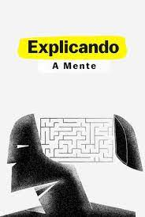

Explicando a Mente

A mente humana é um dos maiores mistérios da ciência, mas também uma fonte de inspiração, criatividade e desafios. Para explorar esse tema fascinante, a Netflix lançou a série Explicando a Mente, um spin-off da série Explicando, que aborda diversos assuntos de forma didática e divertida.